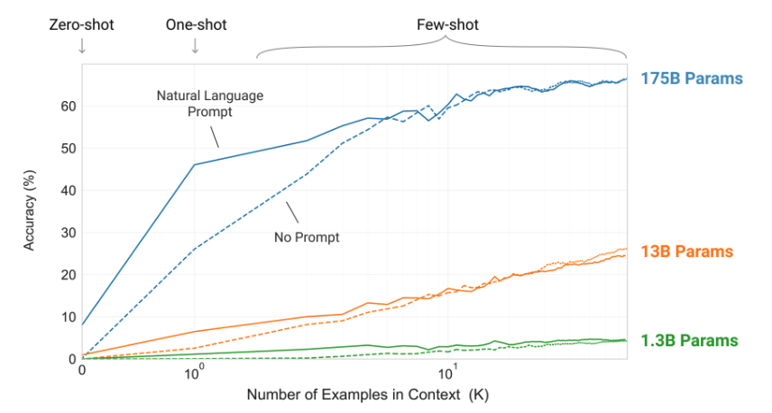
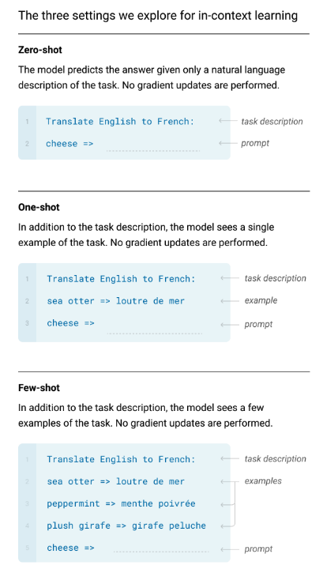

LLMの知識で使い倒すCopilot
- Event:
VS Code Meetup #32 LT
- Presented:
2024/11/08 nikkie
📣 みなさーん！ GitHub Copilot、使ってますかー？？
私「いかにCopilotにコードを書かせるか、それだけを考えている」
Copilotに馬車馬のように働いてもらうために、私はLLMについての知識を使う
本LTのスコープは Inline suggestions です
お前、誰よ（自己紹介）
nikkie（にっきー）
4月のVS Code Conference JPぶりですね
仕事でもCopilot！
機械学習エンジニア・ 自然言語処理 （We're hiring!）
Copilot、お世話になっています！（経済情報領域におけるChatGPT・LLM活用推進プロジェクト）
プライベートでもCopilot！
Uberi/speech_recognition 8.4k⭐️ メンテナ （無料提供によるサポート、ありがとうございます）
🏃♂️他にこのスライドで使っている sphinx-new-tab-link など
Copilotが精度よく続きを書くとき（※私の感覚）
再掲：Inline suggestionsのお話
空に近いファイルではなく、ある程度書かれている ファイル
仮説：Copilotが参考にできるコードが多いとき
自然言語処理からの裏付け
再掲 参考にできるコードが多いとき、Copilotは精度よく生成
実は、例示が多い とき、LLMは 精度が良くなる と一般化できる
キーワードは few-shot
GitHub Copilotの裏は、OpenAIのGPT
The first public version of Copilot was launched using Codex, an early version of OpenAI GPT-3, specifically fine-tuned for coding tasks.
GitHub Copilotの裏は、OpenAIのGPT（承前）🏃♂️
we have updated the base model versions multiple times, using a range from GPT 3.5-turbo to GPT 4o and 4o-mini models
ChatGPT（＝GPT-3.5）は、いきなり出てきたわけではない
2020年 GPT-3
GPT-3論文「Language Models are Few-Shot Learners」
訳してみると「言語モデルは少数の例示から学習する」
GPT-3のプロンプト
自然言語 で書けばよい
続きの生成を 促す
Translate English to French:
cheese =>GPT-3のここがすごい！
自然言語の プロンプトを変えるだけ で、1つのモデルで様々なタスクが解ける
コード生成、翻訳、etc.etc.
🏃♂️後の世代（ChatGPT以降）は、加えて会話形式で生成、かつ、有害なことを言わないように追加訓練をしています
few-shot プロンプト
例示 （shot） をいくつも見せ た上で続きの生成を促す
Translate English to French:
sea otter => loutre de mer
peppermint => menthe poivrée
plush girafe => girafe peluche
cheese =>パラメタ数が多いモデルほど、例を見せるほど正答率向上
{kind=link}
GPT-3論文 Figure 1.2
脱線🏃♂️ なぜ例示すると性能が上がるかは、まだ説明できていないらしいです
例を見せる＝In-Context Learning (ICL) と呼ぶ（GPT-3論文より）
なんと 例が間違っていても性能が上がる ことが分かっている！（Rethinking the Role of Demonstrations: What Makes In-Context Learning Work?）
ICLの説明はいくつか仮説が出てきているが、研究者間でまだ合意できていないらしい
GitHub Copilotとfew-shotプロンプト
参考にできるコードが多いとき、Copilotは精度よく生成する感覚を説明できていそう
すでに書いたコードがCopilotへの例示に なっている！
よーし、テスト書くぞー！！（直近の例）
再掲 いかにCopilotにコードを書かせるか
def test_ # からのファイルに最初のテストを書くとき、Copilotはやや見当違いな生成テストケースを1つか2つ書いた後
def test_これこれのときはTrueを返す():
# actualを特定の引数の組で作るコード
assert actual is True
def test_それそれのときはFalseを返す():
# actualを上とは別の引数の組で作るコード
assert actual is False
def test_ # まだ網羅していない引数の組でコードを書いてくれる
# assertのsuggestionの精度もよいただし、例に引っ張られる
-assert actual is True
+assert actual
-assert actual is False
+assert not actualIMO：いまのCopilotは ライブラリのベストプラクティスを提示するわけではない （だから人間に知識が必要）
まとめ🌯：LLMの知識で使い倒すCopilot
GPT-3論文で示された few-shotを意識 して、Copilotの Inline suggestions を使っています
書き進めて例示豊富になったファイルでは、Tabで採用していくだけ
例を超える生成はまだできないので、ライブラリの ベストプラクティスの知識は開発者に必要 と考えています
One more thing...
服部さん 今後の発表イベント
11/14(木) みんなのPython勉強会#110
11/14(木) みんなのPython勉強会#110
『コード×AI』本・PyCharmとAI
スタッフしています。よろしければ再びお会いしましょう！
ご清聴ありがとうございました
References・Appendixが続きます
References
GPT-3論文 Figure 2.1 (left)
{kind=link}
Appendix
お前、誰よ（補足）
毎日 ブログ を書いてます。連続 720 日達成
VS Code拡張 TOKIMEKI Editing🌈